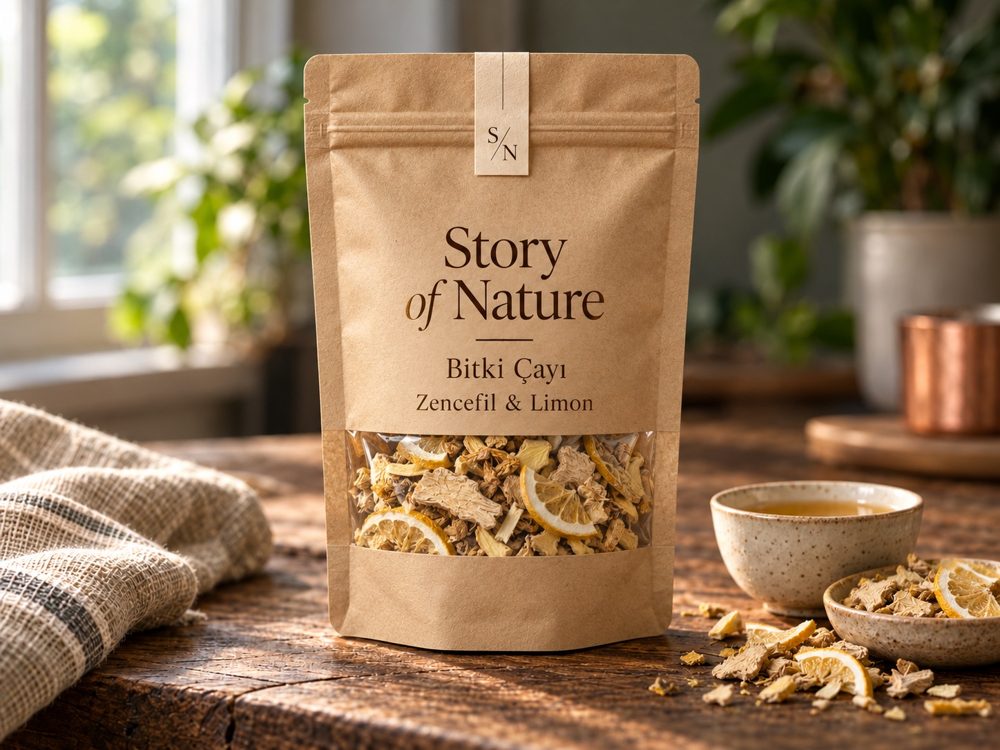
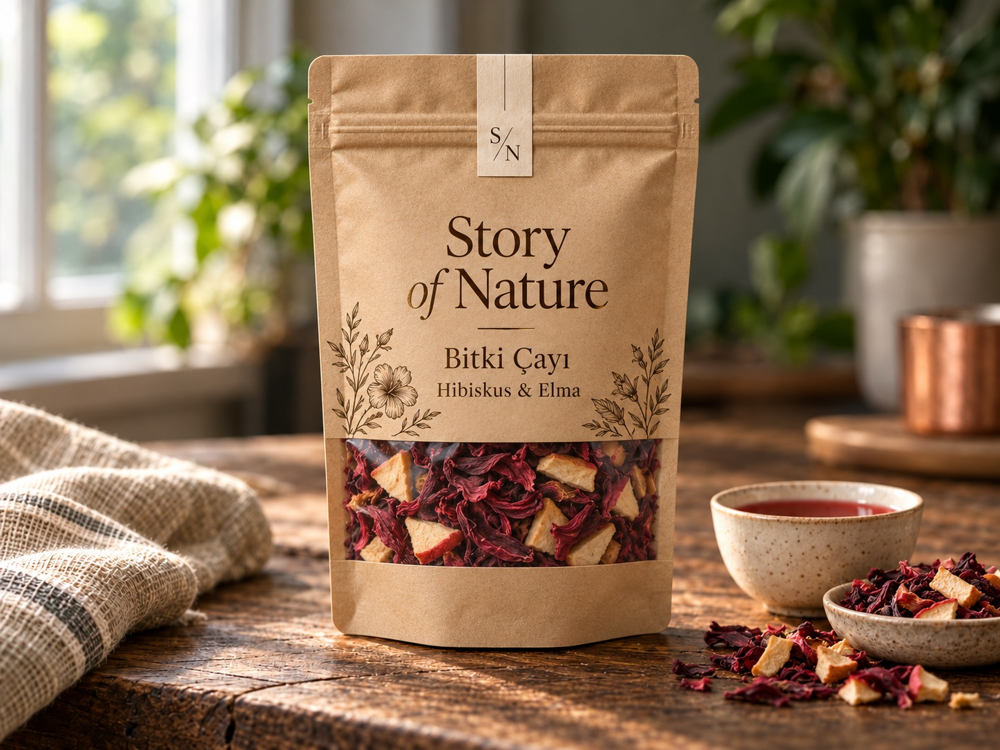
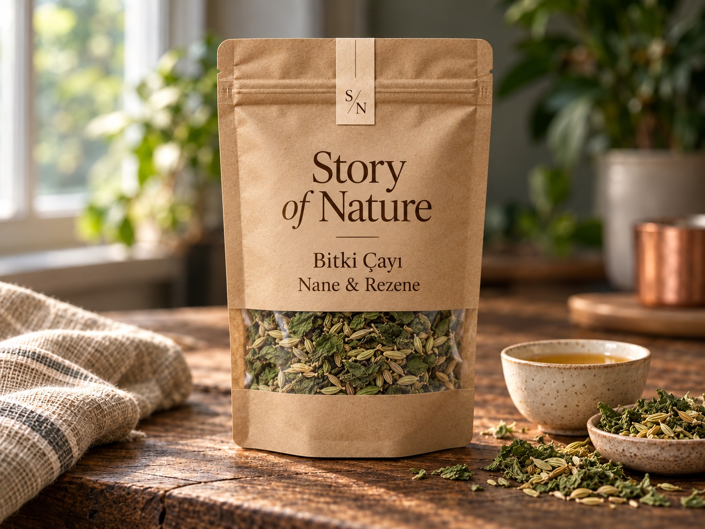
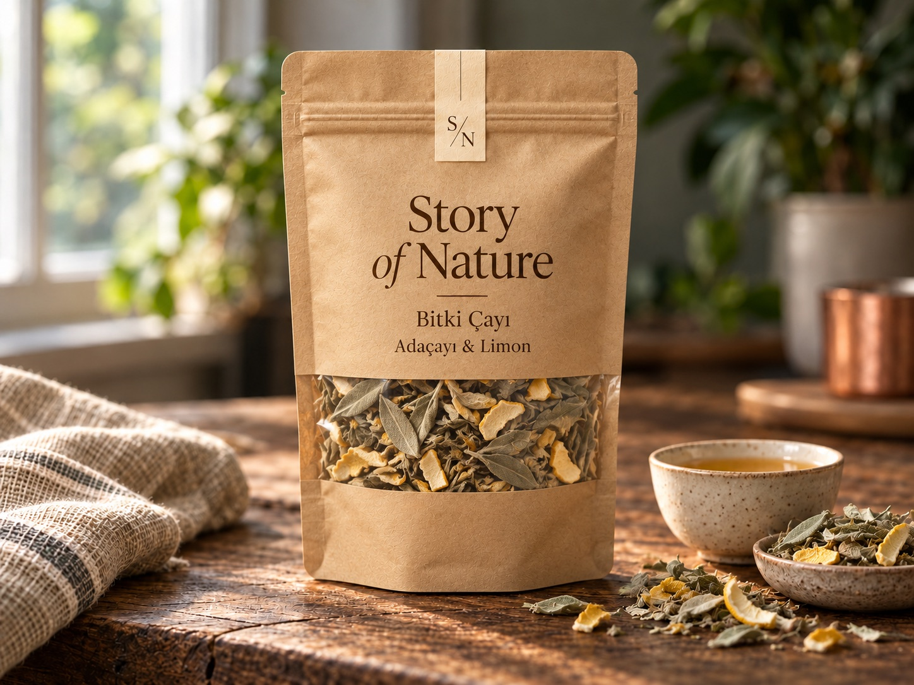
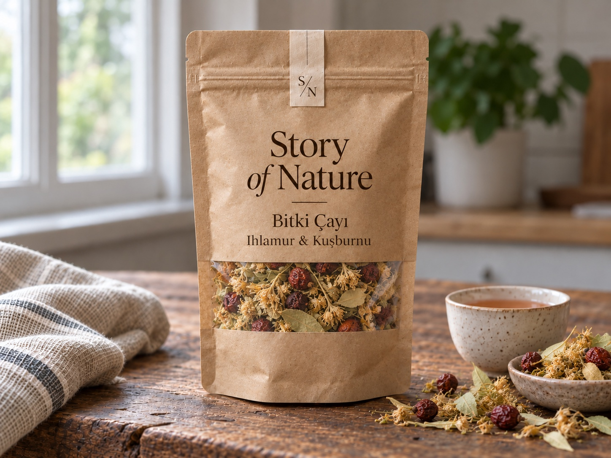

01 / Bitki Çayları
Papatya & Melisa
Çiçeksi ve hafif otsu bir fincan.
- Lezzet profili
- Çiçeksi, yumuşak
- Sunum fikri
- Günün sonunda sakin bir mola
Yaklaşık 199 TL / 50 g
Görseller temsili sunumdur; ambalaj, renk ve kıvam gerçek üründe farklı olabilir.
03 / BOTANİK HARMAN
Çiçeksi, baharatlı, meyvemsi ve ferah aromalar. Pencereli doğal kraft ambalajda altı botanik harman.
Çiçeksi ve hafif otsu bir fincan.
Fiyat belirtilen gramaj için yaklaşık tutardır. Nihai fiyat, içerik, alerjen ve teslimat teklif sırasında teyit edilir.
BU BAŞLIKTAKİ 6 FARKLI ÜRÜN SAYFASI
Günün farklı anları için bir fincanlık mola.
01 / Bitki Çayları
Çiçeksi ve hafif otsu bir fincan.
Yaklaşık 199 TL / 50 g

02 / Bitki Çayları
Sıcak baharat ve narenciye notalarının birlikteliği.
Yaklaşık 219 TL / 50 g

03 / Bitki Çayları
Meyvemsi ve hafif mayhoş bir fincan.
Yaklaşık 219 TL / 50 g

04 / Bitki Çayları
Nanenin ferah aroması ve rezenenin belirgin karakteri.
Yaklaşık 189 TL / 50 g

05 / Bitki Çayları
Otsu karaktere hafif narenciye dokunuşu.
Yaklaşık 189 TL / 50 g

06 / Bitki Çayları
Ihlamurun çiçeksi notalarına kuşburnunun hafif mayhoş dokunuşu.
Yaklaşık 229 TL / 50 g